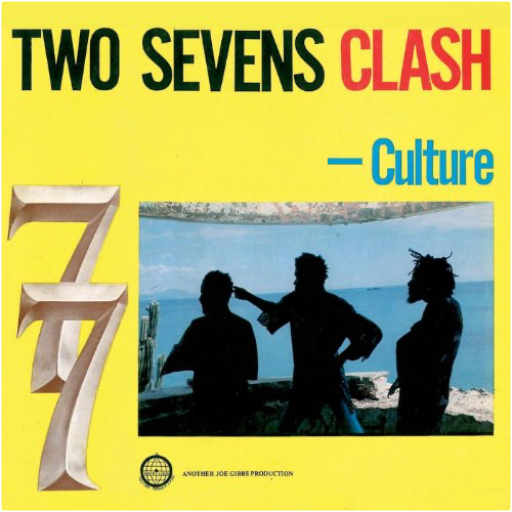

Double vinyl LP pressing. Subtitled - Rare & Classic Funk from the Vaults 1966-1972. UK compilation featuring a mix of sought-after classics, super-rare masterpieces, & undiscovered gems from such artists as Billy Garner, Ron Buford & Ural Thomas, Friends of E. Rodney Jones, Chili Peppers, Vernon Garrett, Chet Ivey & His Fabulous Avengers, Lee Harris, & more. 20 tracks. BGP. 2004.  2008 double vinyl LP release. BGP's unique access to record company vaults across the U.S. means that Mighty Super Funk features titles that you simply can't get anywhere else. This time we have breathtaking Latin Funk from Jamo Thomas and also Los Africanos whose take on 'It's Your Thing' is a dead ringer for Ocho's classic 'Hot Pants Road' - mainly because it has the same team of musicians and producers behind it. Also at the peak of Funk discoveries are Eleanor Rigby's 'Queen of Losers' which is a new tune based on the rhythm of Brenda George's 'I Can't Stand It', and 87th Off Broadway's 'Moving Woman', a scorching piece of female-led group Funk. All of these will be essential must haves for funk fans. Beat Goes Public.  Double vinyl LP pressing. 2011 collection, an installment in the best-selling Super Funk series, containing 20 tracks of super-rare funk, 13 of them previously unreleased. Of the seven issued titles, Betty Gouche's is one of the most in-demand records of the moment. Also highly regarded is the Jim Pipkin, James Brown-alike 'Walking the Duck', while the Eternal Flames' record would set you back hundreds of pounds. The other four are in-demand and none could be bought for less than £100. The unissued tracks include an instrumental version of the break-beat classic 'I Got Some', perfect for producers wanting to swipe the beat. There's a strong chunk of Gospel funk from Dorothy Norwood, gems from the Music City and Dave Hamilton vaults and a scorching slice of southern fried sister funk 'Talk Is Cheap' by an unknown Soul singer. BGP.  180 gram audiophile vinyl / THEIR FIRST ALBUM FROM 1975, INCLUDES THE FUNK HITS 'MOVIN' AND 'CHANGIN' |  two sevens clashculture Era-defining classic from 1977 produced by Joe Gibbs and Errol Thompson featuring Sly & Robbie, Tommy McCook & others...ESSENTIAL!!! the doorsthe doors MONO EDITION! EXTREMELY LIMITED 2010 'Black Friday' Recod Store Day vinyl release of classic debut  In 'Hitsville Re-Visited', the mighty trio add a dose of uptempo funk into traditional highlife grooves.The legendary Ebo Taylor was involved in many funk and highlife records to emerge from Ghana in the 70's and 80's. He worked with bands such as Apagya Show Band, C.K. Mann as well as Pat Thomas, on this, and several other records. Taylor recorded another album with Uhuru Yenzu in 1980 - 'Conflict' - which is also available on Mr Bongo.Pat Thomas career began in 1969 with the 'Broadway Dance Band', leaving a year later to join the 'Uhuru Dance Band'. He then played with Ebo Taylor's 'Blue Monks' and finally formed the 'Sweet Beans' in 1973 where he really made his name.Thomas and Taylor's careers span more than 50 years now and they both still tour to play around the world.  Frank Cunimondo has an extensive discography, having recorded with nearly every artist from Pittsburgh. In addition, he has shared the stage with a number of jazz stars including: Sonny Stitt, Lou Donaldson, Jimmy Witherspoon, Urbie Green, Lee Konitz, Louie Bellson, Joshua Redman, Phil Woods and Frank Rosolino. The Frank Cunimondo Trio is also a fixture of the Pittsburgh Jazz scene.Frank's most popular recording 'Feelin' Good' (from the album The Frank Cunimondo Trio Introducing Lynn Marino [MOVLP1821]) was used in a commercial by a popular beer brand and became an international hit.In the 80s Frank owned a jazz club in Pittsburgh called 'Cunimondo's Keyboard Jazz Supper Club.' In 1989, he was voted 'Best Jazz Pianist' in Pittsburgh. His style is most often compared to pianist Bill Evans.The Frank Cunimondo Trio originally released Sagittarius on Mondo Records in 1975. It includes a cover of Herbie Hancock's 'Chameleon'. On the album Frank Cunimondo plays acoustic and electric pianos, string ensemble, synthesizer, conga and cabasa while Ray Russell plays bass and Lenny Rogers drums. |

Julien
Collection Total:
1 893 Items
1 893 Items
Last Updated:
Oct 20, 2021
Oct 20, 2021


 Made with Delicious Library
Made with Delicious Library